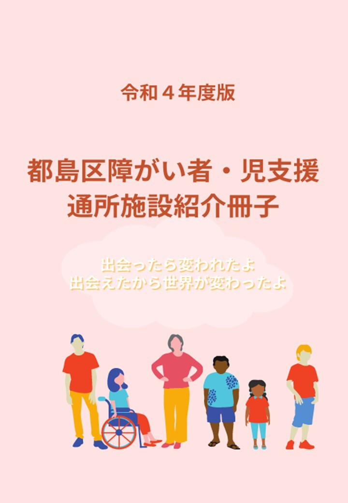

PowerPoint 作品
都島区役所からの依頼で障害者・児童 支援通所施設通所紹介冊子を作成しました。 チームで行いリーダーを務めクライアントと表紙やレイアウトの相談・報告を行いました。 また自らもPowerPointでページのレイアウトを作成し事業所の責任者に電話をかけ冊子への掲載のお願いをしました。 都島区だからこその桜のイメージやQRコード簡単に事業所のホームページへのアクセスなどを提案し作成しました。